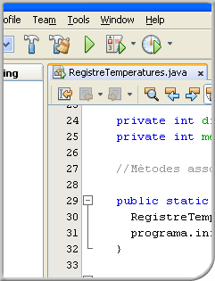

Seguretat i alta disponibilitat

- Coordinació
- Josep Lladonosa Capell
- Redacció
- Josep Maria Arqués Soldevila
- Alba Batlle Linares
- Jordi Cárdenas Guia
- Miquel Colobran Huguet
- Informàtica i comunicacions
- CFGS.ASX.M11/0.13
- Administració de sistemes informàtics en xarxa
© Departament d'Educació
Primera edició: febrer 2013
Última actualització: novembre 2020
Primera edició: febrer 2013
Última actualització: novembre 2020